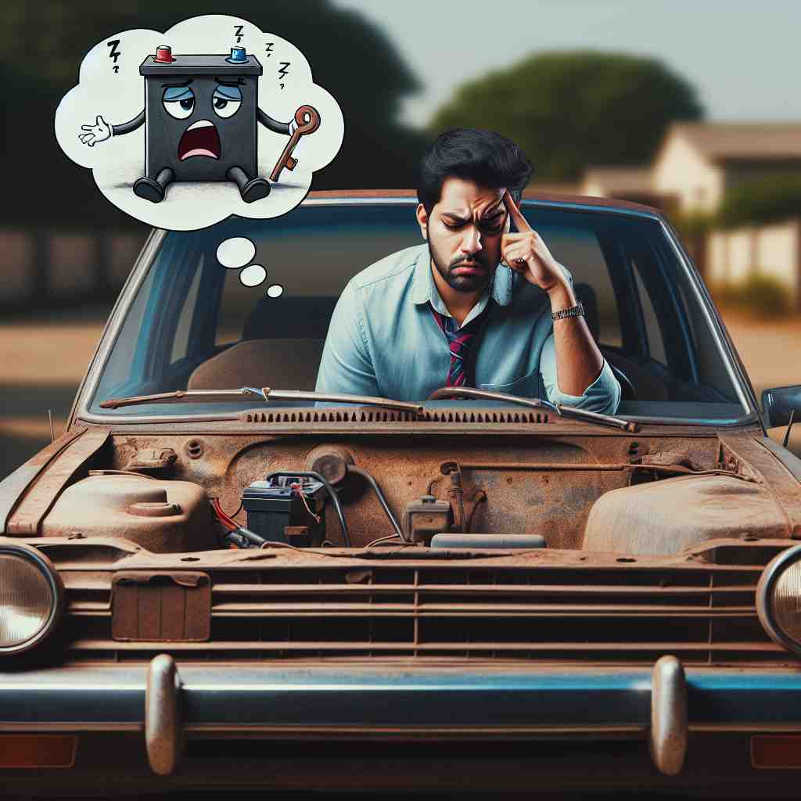

💬 The tree shows its leaves are colorful in autumn. 这棵树在秋天展现出五彩缤纷的叶子。

💬 He is worried about its battery problem. 他对电池问题感到担忧。
💬 Everyone is excited to eat its cake during the celebration. 大家都很期待在庆祝活动中吃蛋糕。
💬 The bird shows its colorful feathers. 鸟儿展示了它五彩斑斓的羽毛。
🧠 记住'its'的核心含义是表示某物的所属关系。无论是指代具体物品、抽象概念还是作为独立代词，都源于这个基本的所属概念。注意区分'its'（所有格）和'it's'（it is的缩写）。
🔈 [ɪts]
🗝️ possessive determiner belonging to or associated with a thing previously mentioned or easily identified 属于或与前面提到的事物相关联的
🎭 在一个家庭花园里，小女孩指着一个树屋说：'这是我们的树屋.' 她的朋友看向那棵树并回答：'是的，我看到了它的窗户和 its 招牌。' 这个场景显示了 'its' 用于描述之前提到的事物的所属关系。
💬 The dog wagged its tail. 狗摇了摇尾巴。
🌳 这是一个形容词性物主代词，表示与 'it'（它）相关的事物，表达 '它的'。由代词 'it' 加上所有格后缀 's' 形成。
🕸️ 1.it: 它 2.itself: 它自己 3.it'll: 它将
💡 可以将 'its' 理解为 'it' 的所有形式，就像 'his' 是 'he' 的所有形式一样。通过对比 'his' 和 'its'，记住它们都是用来指代所有权的形式。